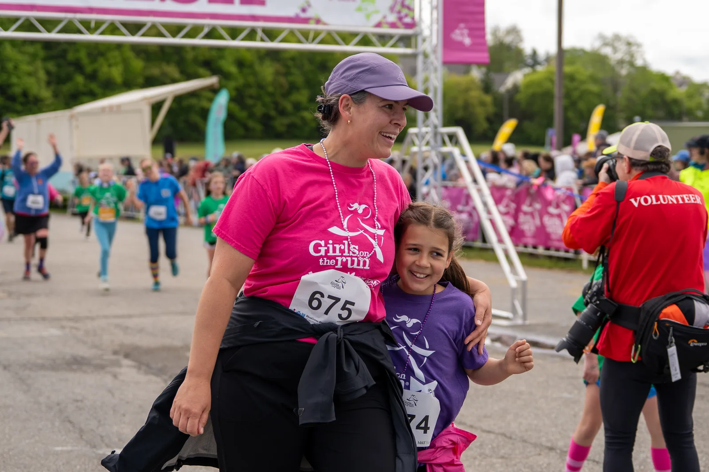
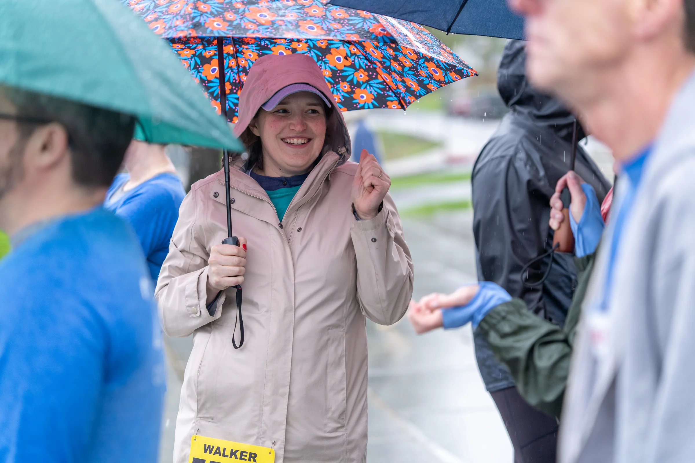
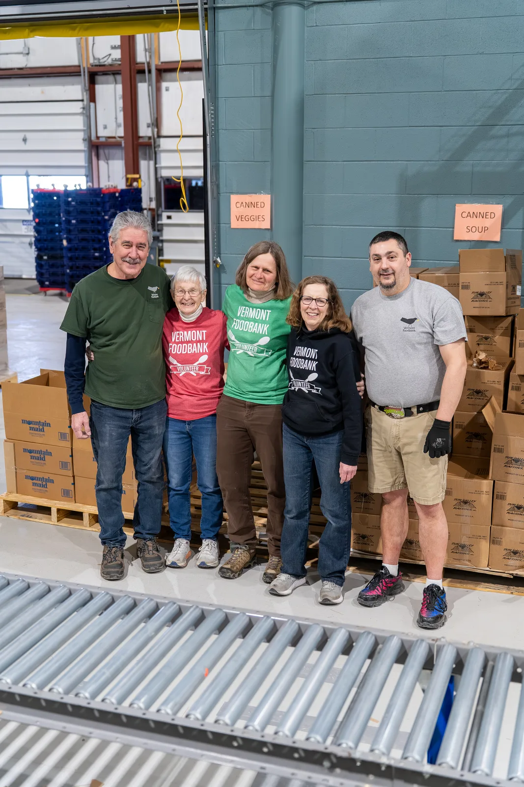
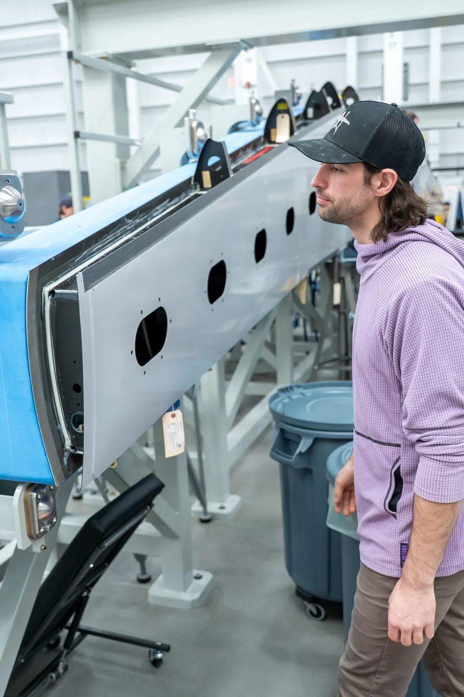
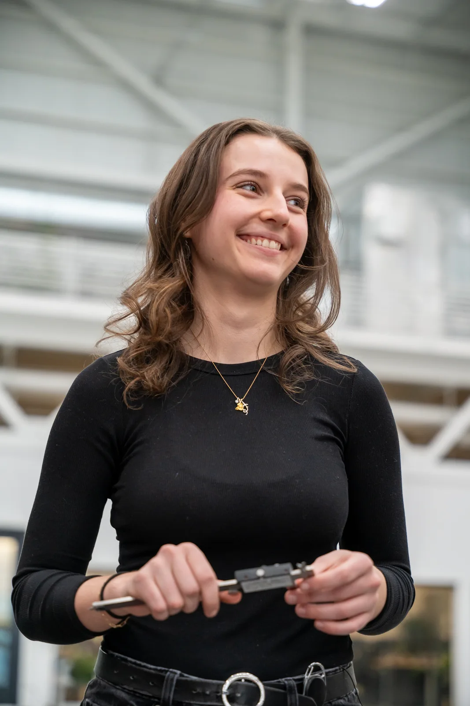
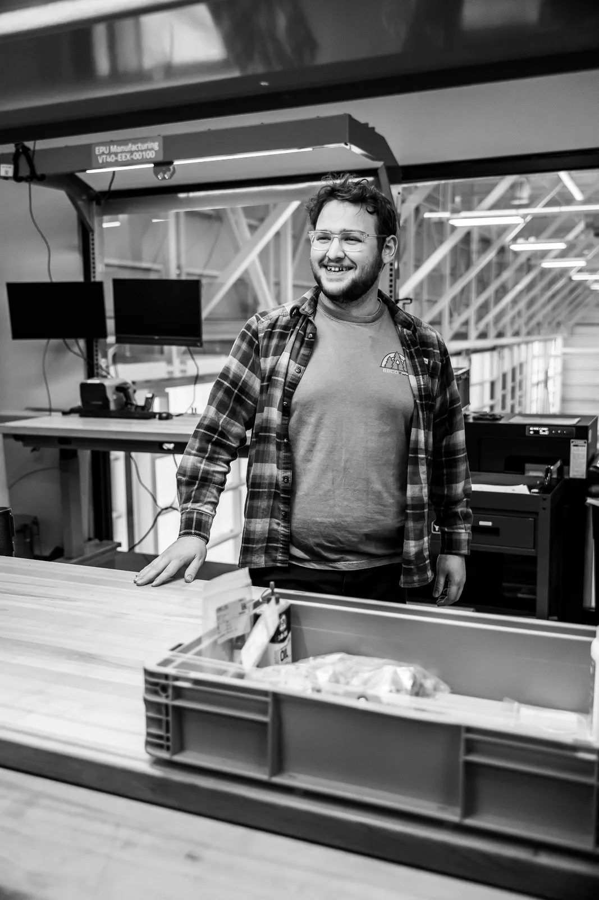
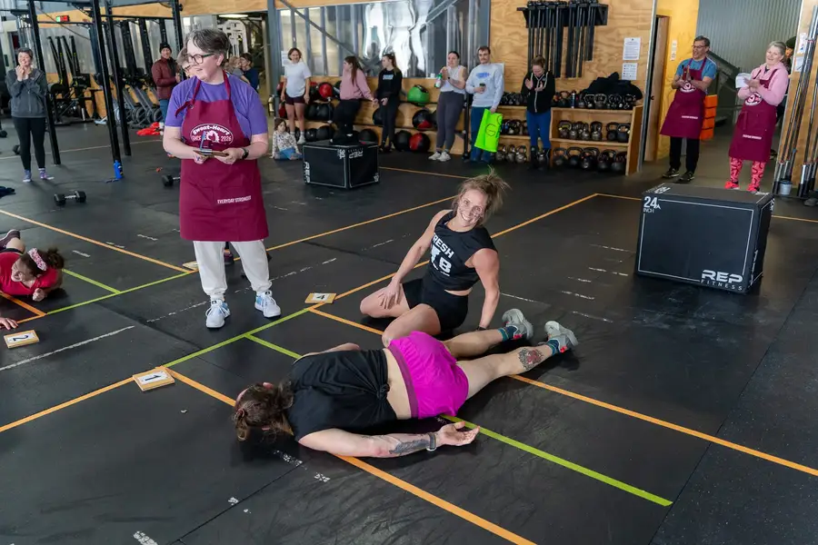

Selected work
Campaigns and series built around a useful story.
I organize this work by the campaign, shoot, or series someone would actually want to explore. Start with the newest work, or keep going into the earlier jobs that taught me how to do it.
All projects

Blue Cross Vermont · 2026Girls on the Run 2026
A complete 185-image documentary gallery from the Vermont 5K.

Blue Cross Vermont · 2026Corporate Cup 2026
Nine photographs from the Blue Cross team, the course, and the finish in downtown Montpelier.
 Blue Cross Vermont · 2026
Blue Cross Vermont · 2026
Flight Paths
A video series about the people finding their way into Vermont’s growing aviation sector.
Blue Cross Vermont and CBSS · 2026Blue Cross Portraits
Seven selected portraits from the senior team and Lindsay Segale.

Vermont Foodbank · January 2026Vermont Foodbank Volunteer Day
A 38-image documentary series about the people and process behind a volunteer packing day.

BETA Technologies · January 2026Andrew at BETA
A 17-image workplace series built around a person, an aircraft, and the process connecting them.

BETA Technologies · January 2026Emma at BETA
A 40-image workplace series moving between portraiture, detail, and the manufacturing floor.

BETA Technologies · January 2026Ethan at BETA
A 30-image workplace series about the person inside a larger manufacturing system.

Green Mountain Community Fitness · 2026Sweat-Heart Throwdown
A Valentine’s Day competition photographed from warmup through the last exhausted finish.
 EastRise and Urban Rhino · 2025–2026
EastRise and Urban Rhino · 2025–2026
Member Stories and Campaign Films
Eleven films, including a nine-spot member-story series I produced with Urban Rhino.
 Family photography · Fall 2025
Family photography · Fall 2025Giron Family
A 36-image family session moving from open fields into the fall woods.
 EastRise · 2025
EastRise · 2025
Wheels for Warmth 2025
A practical public-service campaign that turned donation instructions into the month’s strongest-performing content.
 EastRise · 2025
EastRise · 2025
Taylor Hoar Racing 2025
A season-long sponsorship story told across race days, portraits, social posts, and local history.
 EastRise · 5 photographs
EastRise · 5 photographsShred Fest
Document destruction and community service at EastRise branches.
 EastRise · 11 photographs
EastRise · 11 photographsKarina and Ryan
A first-time homebuyer story photographed with Karina, Ryan, and their family.
 EastRise · 9 photographs
EastRise · 9 photographsJohn and Donia
An EastRise member story photographed at home with John and Donia.
 EastRise · 4 photographs
EastRise · 4 photographsBike Shop Member Story
A Vermont couple photographed at work inside their bicycle shop.
 EastRise · 11 photographs
EastRise · 11 photographsWinooski Development
Housing and economic development photographed in Winooski.
 EastRise · 4 photographs
EastRise · 4 photographsCOTS Financial Literacy
EastRise staff sharing practical financial education with COTS participants.
 EastRise · 2 photographs
EastRise · 2 photographsEastRise Staff at Work
EastRise staff and financial counselors photographed in their working environment.
 EastRise · 13 photographs
EastRise · 13 photographsWood for Good
EastRise volunteers splitting and stacking firewood for neighbors.
 EastRise · 10 photographs
EastRise · 10 photographsWheels for Warmth 2024
The 2024 tire collection photographed across volunteers, donors, and the work site.
 EastRise · 10 photographs
EastRise · 10 photographsVeggieVanGo with EastRise
EastRise staff supporting the Vermont Foodbank's VeggieVanGo distribution.
 EastRise · 4 photographs
EastRise · 4 photographsVeggieVanGo with Taylor Hoar
Taylor Hoar joining EastRise and the Vermont Foodbank for a VeggieVanGo distribution.
 VSECU and EastRise · 2019–2025
VSECU and EastRise · 2019–2025Social Highlights
Selected member stories, community coverage, campaigns, and lighter moments from six years of social publishing.
 VSECU and EastRise · 2019–2025
VSECU and EastRise · 2019–2025
EastRise Writing
The complete archive of 53 financial education and Vermont consumer articles.
 Green Mountain Community Fitness · 2025
Green Mountain Community Fitness · 2025
Bike Fitting
A close, practical photo story about expertise, adjustment, and the small details that help a rider fit the bike.
VSECU and EastRise · 2019–2025Live broadcasts
Hosting, creative direction, and technical production for major public and employee broadcasts.
EastRise · 2024–2025EastRise Portraits
A 45-image leadership and board portrait collection.
 EastRise · 2024
EastRise · 2024EastRise Website Launch
A new public website built to introduce a new institution without losing its Vermont history.
 EastRise · 2024
EastRise · 2024
EastRise Launch Campaign
Commercial-set photography and public brand imagery built to introduce a new credit union.
 VSECU · 2021
VSECU · 2021VSECU Website Redesign
Content, imagery, migration, and quality assurance for a clearer digital member experience.
VTDigger · 2018–2019Membership conversion
A simpler donation page and a disciplined testing program increased membership conversion by 137%.
Stowe Mountain Resort · 2013–2019Teaching technical ideas in real time
Six seasons of turning complicated physical instructions into something a skier could use on the next turn.
Fairbanks Museum & Planetarium · 2015–2018Planetarium growth
Programming, operations, staff development, and better systems helped planetarium revenue grow from $13,359.80 to $31,363.40.
Connecticut College · 2013–2015Early digital storytelling
College blogs, social content, donor events, and work on a major website redesign.
Software development
Small tools for real friction.
I build software when the useful answer needs to be a working system, not another document. These projects cover native Mac apps, API integrations, and tools that help assistants do careful work.

Ping Warden
A native menu bar app that keeps local wireless discovery traffic from disrupting latency-sensitive work.
- Swift
- macOS 13+
- Open source
- 80 GitHub stars
notes.searchmail.searchcalendar.eventsreminders.list
Apple Core
A personal MCP server that gives assistants controlled access to local Apple services.
- Swift
- 77 tools
- Local by default
- 1 GitHub star
connectors.discoverroutes.publishclients.exportsecrets.resolve
Bridgeport
A native gateway that discovers Mac-local MCP servers and exposes only the connectors their owner chooses.
- Swift
- macOS 26+
- OAuth 2.1
- 0 GitHub stars
pages.publishinstagram.insightsthreads.createads.report
Meta MCP
One Model Context Protocol server for publishing, analytics, advertising, and commerce across Meta platforms.
- TypeScript
- 200 tools
- 7 platforms
- 24 GitHub stars
budget.healthtransactions.searchcategory.planchanges.undo
YNAB MCP
A safety-first Model Context Protocol server for understanding and updating a YNAB budget.
- JavaScript
- 58 tools
- Read-only by default
- 10 GitHub stars

Skylight Bridge
A native bridge between selected Apple Photos, Reminders, and Notes content and a Skylight family calendar.
- Swift
- macOS 26+
- Signed and notarized
- 11 GitHub stars